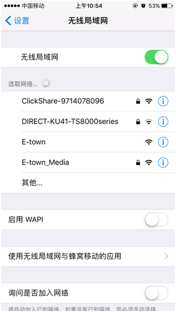
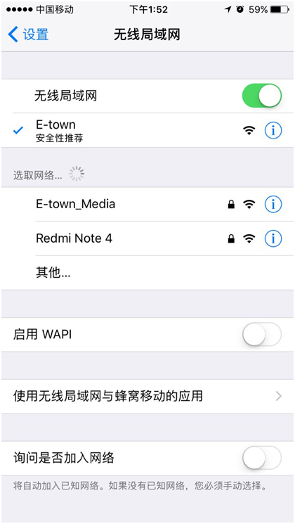
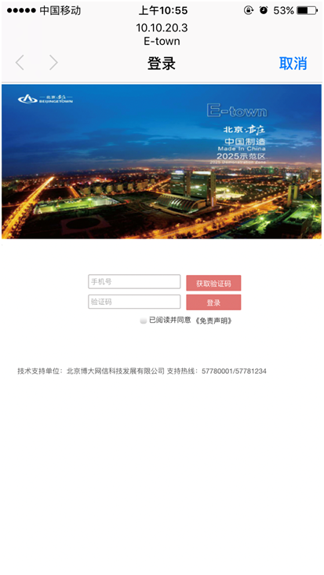
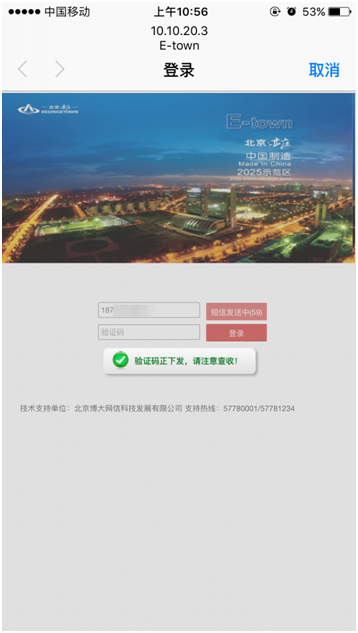
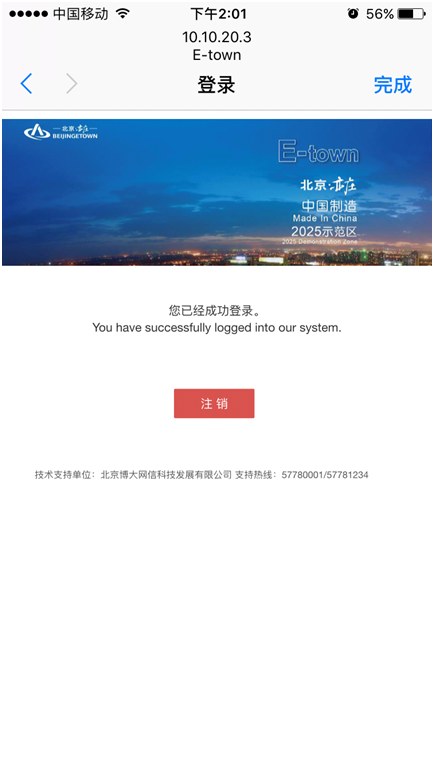
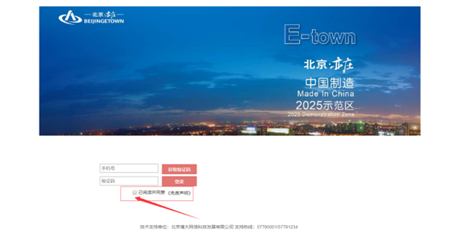
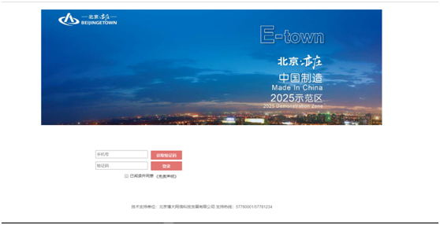

E-town无线连接操作
E-town无线连接操作
北京经济技术开发区宽带无线城市免费接入服务的公共服务标识为“E-town”， 在展馆内，你只需在手机上开启无线网络，便能迅速搜索到“E-town”无线网络，实现的Wi-Fi接入服务。
1.无线E-town网络登陆
- 1.1 步骤一
-
手机打开无线网络

- 1.2 步骤二
-
选择SSID为E-town的网络，点击连接会自动弹出Protal认证页面


- 1.3 步骤三
-
输入手机号，选择 已阅读并同意 《免责声明》前面的同意，点击获取验证码


- 1.4 步骤四
-
输入验证点击 登录 按钮即可上网
- 1.5 步骤五
-
点击右上角完成或直接退出认证页面即可正常使用免费的E-town网络
2.常见问题
- 2.1 无法点击获取验证码按钮
-
Protal页面中 输入手机号以后 需要在 已阅读并同意《免责声明》前选择同意

- 2.2 无法自动弹出Protal认证页面
-
默认情况下链接上E-town无线网络后，97%以上的手机都会自动弹出Protal认证页面，但存在手机型号、防护软件、杀毒软件等诸多客观因素有时Protal认证页面不会自动弹出。
- 解决方式：
-
正常链接到E-town无线网络。手动打开手机浏览器，输入网址（例如： www.ebda.cn）就可以自动跳转到Protal认证页面。
按照正常的提示信息 输入手机号验证即可。

- 2.3 服务热点
-
支持服务热线：57780001/57781234
E-town免费无线网络由北京经济技术开发区管委会牵头开发建设，统一标识为E-town